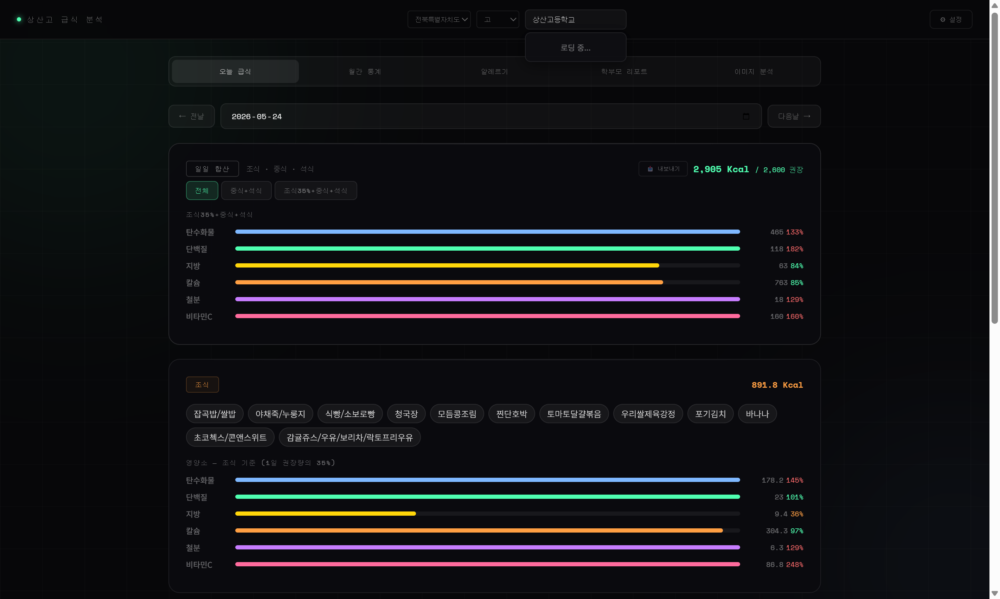
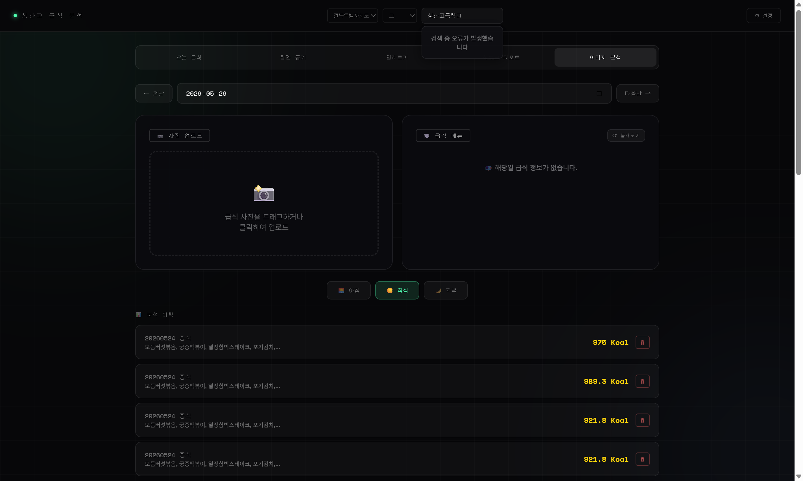

| 데이터명 | 제공기관 | 활용 방식 | 엔드포인트 |
|---|---|---|---|
| 급식식단정보 | 교육부 (NEIS) | 학교별 일자별 조·중·석식 메뉴, 칼로리, 영양소(NTR_INFO) 조회 | open.neis.go.kr/hub/mealServiceDietInfo |
| 식품영양성분DB | 식품의약품안전처 (공공데이터포털) | 음식명으로 100g당 칼로리(kcal) 및 6대 영양소 검색 · 매칭 | apis.data.go.kr/1471000/FoodNtrCpntDbInfo02 |
best.ptfastNlMeansDenoisingColored로 노이즈 제거 → Sharpening Kernel(3×3 라플라시안)으로 경계 강화
모델 best.pt로 conf_threshold=0.15, imgsz=500 설정 추론
클래스 0(식판) + 클래스 1~5(5개 음식 구역) 마스크 동시 검출
식판 바운딩 박스 내 Y좌표 기준 상/하 행 분리 → 상행 좌→우 1,2,3,4번 · 하행 좌→우 5,6번
Centroid(moment) 계산으로 중심점 정확히 추정
6색 구역별 오버레이(투명도 25%) + 외곽선(두께 3px) + 섹션 번호 렌더링
JPEG 품질 85%로 Base64 인코딩 → 프론트 실시간 미리보기
cv2.getPerspectiveTransform + cv2.warpPerspective

현재 상산고등학교(전북특별자치도) 기점 → 전국 17개 시도교육청 소속 모든 학교로 서비스 확장
NEIS API의 ATPT_OFCDC_SC_CODE 파라미터를 활용한 전국 검색 이미 구현 완료
영양 데이터를 기반으로 AI가 작성하는 개인 맞춤 영양 코멘트
"이번 주 단백질이 평균 30% 부족합니다. 다음 주 메뉴 중 ○○를 추천드립니다."
일일 영양 균형 점수화 → 주간/월간 랭킹 → 건강한 식습관 형성 동기 부여
연속 균형 식단 달성 시 디지털 뱃지 획득
현재 식판 6구역 모델 → 다양한 식기(원형·사각·나눔접시) 대응 모델 학습
학교 급식 외 일반 식당 메뉴 분석으로 생활 속 영양 관리 연결